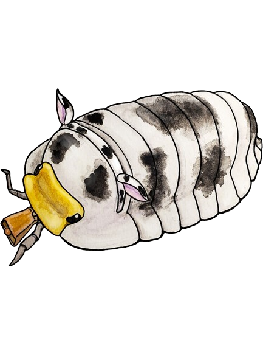

-
Links
- Weird Game
- About Me
- Dogs n Beetles
- Home
Lil' Sum' 'Bout Cows
 Bovini, a tribe of the subfamily Bovinae, encompasses a diverse group of
large mammals characterized
by their cloven hooves and ruminant digestive systems. This taxonomic tribe includes some of the
most iconic and economically significant animals on Earth, such as cattle, bison, and buffaloes.
Biologically, members of Bovini share several key anatomical features, including a four-chambered
stomach specialized for digesting cellulose-rich plant material through fermentation. Additionally,
their skeletal structure typically includes large, robust bodies supported by strong legs adapted
for grazing or browsing across various habitats, from grasslands to forests.
Bovini, a tribe of the subfamily Bovinae, encompasses a diverse group of
large mammals characterized
by their cloven hooves and ruminant digestive systems. This taxonomic tribe includes some of the
most iconic and economically significant animals on Earth, such as cattle, bison, and buffaloes.
Biologically, members of Bovini share several key anatomical features, including a four-chambered
stomach specialized for digesting cellulose-rich plant material through fermentation. Additionally,
their skeletal structure typically includes large, robust bodies supported by strong legs adapted
for grazing or browsing across various habitats, from grasslands to forests.
The anatomy of Bovini is intricately adapted to their ecological niches and evolutionary history.
These animals possess distinctive horns, which vary greatly in size and shape among species. While
some species, like the African buffalo, sport large, curving horns used for defense and dominance
displays, others, such as domestic cattle, may have smaller or even hornless variations due to
selective breeding. Furthermore, Bovini exhibit complex social behaviors, often forming herds or
groups that facilitate communication, protection against predators, and efficient foraging
strategies.
The history of Bovini traces back millions of years, with fossil evidence suggesting their presence
in various regions across the globe. The domestication of certain Bovini species, particularly
cattle, marks a significant milestone in human history, leading to profound impacts on agriculture,
economics, and culture. Through selective breeding and genetic manipulation, humans have shaped the
biology and anatomy of Bovini to meet diverse needs, from milk and meat production to labor and
transportation. Today, these animals continue to play crucial roles in ecosystems and human
societies, serving as sources of food, labor, and companionship while also raising important
questions about conservation, animal welfare, and sustainable development.
Dairy-Cow Isopods
Dairy Cow Isopods, scientifically known as Porcellio laevis "Dairy Cow," are captivating members of the terrestrial isopod family native to Europe. Aptly named for their striking black-and-white coloration resembling the markings of a dairy cow, these small crustaceans add a charming touch to vivariums and terrariums worldwide. Their distinctive patterning serves not only as camouflage but also as a defense mechanism against potential predators. Despite their diminutive size, Dairy Cow Isopods play a crucial role in their ecosystems by aiding in the decomposition process, breaking down organic matter and enriching soil quality.Dairy cow isopods, also known as Armadillidium vulgare, have a varied diet that consists primarily of decaying plant matter, such as leaves, fruits, and vegetables. They are detritivores, meaning they feed on decomposing organic material found in their environment. In addition to plant debris, dairy cow isopods also consume fungi, algae, and occasionally animal matter like dead insects. Their feeding habits play a vital role in the ecosystem, aiding in the decomposition process and nutrient cycling. These omnivorous critters are essential members of their habitats, contributing to the overall health and balance of their ecosystems. Their gentle demeanor and low maintenance requirements make them popular pets among enthusiasts of all ages, fostering a deeper appreciation for the intricate beauty and importance of these often-overlooked creatures in the natural world.